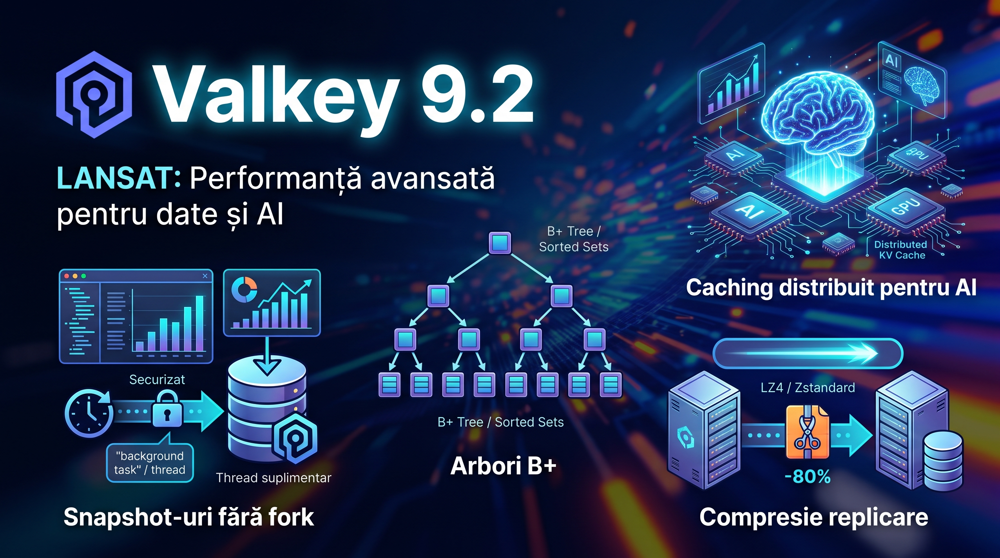

Valkey 9.2 a fost lansat: Snapshot-uri fără procese fork, arbori B+ pentru Sorted Sets, compresie a replicării și caching distribuit pentru AI

Valkey, alternativa open-source la Redis susținută de Linux Foundation, a atins disponibilitatea generală (General Availability) pentru versiunea 9.2. Această ediție majoră introduce snapshot-uri realizate fără bifurcarea proceselor (forkless snapshots), o arhitectură bazată pe arbori B+ pentru seturile ordonate, reducerea cu până la 65% a traficului de replicare și un nou tip de date orientat spre sarcinile de inferență AI.
1. Snapshot-uri fără fork() (eliminarea vârfurilor de memorie RAM)
Execuție pe fir de execuție în fundal (background thread): În mod tradițional, crearea unui snapshot pe instanțe intens solicitate presupune pornirea unui proces separat (
fork()), ceea ce generează creșteri temporare masive ale consumului de memorie din cauza operațiunilor copy-on-write (uneori dublând necesarul de RAM). Valkey 9.2 realizează acum snapshot-urile printr-un fir de execuție în fundal.Dimensionare predictibilă a infrastructurii: Această schimbare elimină vârfurile temporare de memorie atât la backup-urile periodice, cât și la pregătirea snapshot-urilor pentru sincronizarea noilor replici, permițând administratorilor să dimensioneze memoria RAM strict pe baza sarcinii reale de lucru.
2. Performanță pentru Sorted Sets și compresia replicării
Arhitectură B+ tree pentru Sorted Sets: Seturile ordonate (sorted sets — utilizate frecvent pentru clasamente, sisteme de ranking și cozi de priorități) folosesc acum o structură bazată pe arbori B+ pentru colecțiile mari. În testele cu milioane de intrări, aceasta oferă actualizări cu până la 105% mai rapide și o eficiență a memoriei cu 36% – 43% mai bună.
Compresie continuă a fluxului de replicare: Noul mecanism de compresie a fluxului reduce traficul continuu de replicare cu 50% – 65%, iar opțiunea integrată de compresie LZ4 poate micșora fișierele de backup cu până la 80%. Noile replici se sincronizează cu aproximativ 35% mai repede, cu un cost redus de procesare (2% – 4% dintr-un nucleu CPU per replică).
3. Noul tip de date Path Hash și caching KV distribuit pentru AI
Tipul nativ
Path Hash: Conceput pentru căutări ierarhice rapide, permite aplicațiilor să identifice cel mai lung prefix potrivit (longest matching prefix) și locația datelor din cache printr-o singură comandă. În sistemele de inferență AI,Path Hashfuncționează ca un index ușor care indică spre blocurile de context deja calculate și păstrate în memoria GPU sau a gazdei.Caching KV distribuit (proiect complementar): Odată cu Valkey 9.2, a fost anunțată o capabilitate open-source separată de caching distribuit cheie-valoare destinată sarcinilor AI. Integrată inițial cu LMCache (compatibil cu motoarele de inferență vLLM și SGLang), aceasta permite serverelor multi-GPU să partajeze contextul calculat anterior, reducând costurile de inferență cu până la 40% și latența time-to-first-token cu până la 80%.